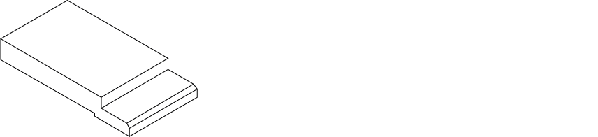

In diesem Dialog kann die Position der Anschläge für den gewählten Biegeprozess Als Biegeprozess werden alle Handlungen oder Abläufe bezeichnet, die für das Biegen eines oder mehrerer Biegungen notwendig sind. verändert oder neu gesetzt werden. Ungültige Kombinationen von Anschlagsoptionen werden mit einem Fehlersymbol gekennzeichnet.
Es gibt zwei grundsätzliche Arten von Anschlagfingern:
- Standard Anschlagfinger
- Anschlagfinger für Eckanschläge
Dieser Anschlagfinger Kann nicht für Eckanschläge verwendet werden. Bei den meisten Maschinen ist er mit dem Anschlagfinger für Eckanschläge kombiniert.
Fig.: Prinzipielle Darstellung des Standard Anschlagfingers

Kann für alle Anschläge verwendet werden.
Fig.: Prinzipielle Darstellung des Anschlagfingers für Eckanschläge

Info: Die folgenden Erklärungen beruhen auf dem Anschlagfinger für Eckanschläge, da er in den meisten Fällen verwendet wird. Bis auf den Eckanschlag gelten alle Beschreibungen auch für den Standard Anschlagfinger.
Optionen
Mit dieser Option wird der jeweilige Anschlagarm positioniert oder geparkt.
Ist die Option Geparkt aktiviert, werden alle anderen Optionen des Anschlagfingers, ausser die Option Anschlagkante, deaktiviert.
NOTE: Ist diese Option Geparkt aktiviert und es wird für diesen Anschlagfinger einen andere Anschlagkante gewählt, wird die Option Geparkt wieder deaktiviert und der Anschlagfinger an die gewählte Anschlagkante gesetzt.
Mit dieser Option wird der Anschlagfinger an der jeweiligen Ecke der Anschlagkante angeschnappt. Um das Teil genau zu fixieren, werden mindestens 4 Anschlagpunkte (A) benötigt.

Fig.: Anschlagspunkte beim Anschnappen Als Anschnappen bezeichnet man das Setzen des Anschlagfingers an eine Anschlagkante oder an eine Ecke. von Ecken
NOTE: Diese Option ist nur möglich, wenn ein Anschlagfinger für Eckanschläge montiert ist.
Wählen Sie diese Option bei runden Kanten oder Eckanschlägen.
Sollte mit der aktuellen Position des Anschlagfingers kein Eckanschlag möglich sein, kann durch den Wechsel der Anschlagfinger auf den Anschlagsarmen möglicherweise dennoch ein Anschlag realisiert werden.
Mit der Schaltfläche Zuweisen, wird die Anschlagkante bestimmt, an welche der Anschlag gesetzt werden soll. Alle möglichen Anschlagskannten werden durch ein schwarze Linie markiert.
Info: Beim Wählen der Schaltfläche Zuweisen wird auf die rot markierte Anschlagskante Ist die Kante am Biegeteil, welche zum genauen Positionieren an einen Anschlagpunkt des Anschlagfingers gedrückt wird. gezoomt (A).
Fig.: Anschlagskante zuweisen

Anschläge einer Kante zuweisen
- Die Schaltfläche Zuweisen wählen.
- Auf die Anschlagskante Tippen, dem die Anschläge zugewiesen werden sollen.
- Im Dialog Übernehmen bestimmen, für welche Positionen der Anschlag übernommen werden soll
Tip: Ist es mit dem Anschlagspunkt Bezeichnet einen Punkt oder eine Fläche am Anschlagfinger, welcher zum Anschlagen einer Anschlagskante verwendet werden kann. auf dem Anschlagfinger nicht möglich einen Anschlag zu setzen, mit der Option Referenzpunkt einen anderen Punkt am Anschlagfinger wählen.
Mit dieser Option wird bestimmt, an welcher Position der Anschlagfinger die Anschlagskante des Biegeteils angeschlagen wird. Standardmässig sind pro Anschlagarm ein gerader Anschlagfinger und ein Anschlagfinger für Eckanschläge montiert.
Die Auswahl des Referenzpunkts kann im Dialog Parameter oder über die Schaltfläche Ändern erfolgen.
- Ändern
Der Referenzpunkt wird durch Auswahl der Referenznummer auf dem Anschlagfinger gewählt werden. Es wird auf die Anschlagfinger mit den Nummerierungen der Referenzpunkte gezoomt.
Eckanschlag (A)
| 0/4 | Das Biegeteil liegt auf dem Anschlagfinger auf und kann angeschlagen werden. Ebenfalls kann der Anschlagspunkt für einen Eckanschlag verwendet werden. |
| 1/2 | Das Biegeteil kann nur angeschlagen werden. Wird der Anschlagpunkt (2) gewählt, kann der Anschlagfinger bei kurzen Biegeschenkeln über das Unterwerkzeug positioniert werden. |
| 3 | Das Biegeteil liegt auf dem Anschlagarm auf und wird am Bolzen angeschlagen. |
| 5/6 | Das Biegeteil kann nur angeschlagen werden. Wird der Anschlagpunkt (6) gewählt, kann der Anschlagfinger bei kurzen Biegeschenkeln über das Unterwerkzeug positioniert werden. |
Gerader Anschlag (B)
| 7 | Das Biegeteil liegt auf dem Anschlagfinger auf und kann angeschlagen werden. |
| 8/9 | Das Biegeteil kann nur angeschlagen werden. Wird der Anschlagpunkt (9) gewählt, kann der Anschlagfinger bei kurzen Biegeschenkeln über das Unterwerkzeug positioniert werden. |
Fig.: Referenzebenen an den Anschlagfinger

Mit dieser Option kann der Sensor am Anschlagfinger ein- oder ausgeschaltet werden. Die Option ist nur aktiv, wenn ein Sensor am Anschlagfinger vorhanden ist.
Der Sensor erkennt, ob das Blech am Anschlagfinger korrekt anliegt. Liegt das Blech bei eingeschalteten Sensor nicht korrekt am Anschlagfinger an, kann der folgende Biegeprozess nicht ausgeführt werden.
Mit dieser Option wird das Mass bestimmt, mit dem der Anschlagfinger vor dem Ausführen der Biegung Die Biegung ist ein Element der Profilprogrammierung und bezeichnet eine Formänderung im Werkstück. Einer Biegung können mehrere Attribute zugeordnet werden: Schenkellänge, Biegewinkel, Biegeradius (optional), Anbiegewinkel (optional), zusätzliche Attribute (optional). Eine Biegung kann aus mehreren Biegeprozessen bestehen. von der Anschlagkante zurückgezogen wird. Rückzüge werden angewendet, um Kollisionen zwischen Biegeteil und Anschlagfinger während des Biegeprozesses zu verhindern.
Rückzüge müssen gesetzt werden, wenn ein bereits gebogenes Teil am Anschlagfinger (1) angeschlagen wird, dessen Schenkel nach unten zeigt (B).
Fig.: Anwendung eines Rückzugs (A) bei einem Anschlag mit nach unten gebogenem Schenkel

Legende:
| A | Mindestabstand Rückzug Als Rückzug wird die Rückwärtsbewegung des Anschlagarms bezeichnet, um eine Kollision des Anschlagfingers mit dem Biegeteil zu verhindern. Die Rückzugbewegung wird ausgeführt, nachdem das Biegeteil zwischen Ober- und Unterwerkzeug geklemmt wurde. Anschlagfinger |
| B | Wegstrecke Endpunkt Schenkel |
| 1 | Anschlagkante |
| 2 | Drehpunkt des Schenkels (B) während dem Biegen |
NOTE: Der minimale Rückzugwert beim automatischen Zuweisen der Anschläge ist 10 mm.
Mit dieser Option wird die Position des Anschlagfingers an der Anschlagkante des Biegeteils bestimmt. Das Positionieren des Anschlagfingers kann auf zwei Arten geschehen.
- Durch Eingabe der Position im Feld Z-Position.
- Durch Verschieben in der 3D-Ansicht.
Schaltflächen
- Konflikte quittieren
- Warnungen
- Fehler
Es können Warnungen und Fehler für Prozess, Biegung, Station Eine Station besteht aus ein- oder mehreren Segmenten eines Ober- und Unterwerkzeugs. oder Teil quittiert werden.
Mit dieser Funktion wird die Warnung des gewählten Biegeprozesses quittiert. Die Warnung wird hinter der Werkzeugbezeichnung als Symbol angezeigt.
Tip: Verwenden Sie diese Funktion für Warnungen, die für den gewählten Biegeprozess ignoriert werden können. Mit dem Quittieren wird dem System mitgeteilt, dass das Werkzeug für den Biegeprozess verwendet werden kann.
Mit dieser Funktion können Fehler von zugewiesenen Werkzeugen quittiert werden.
Info: Die Funktion ist nur aktiv, wenn der anstehende Fehler quittiert werden kann.